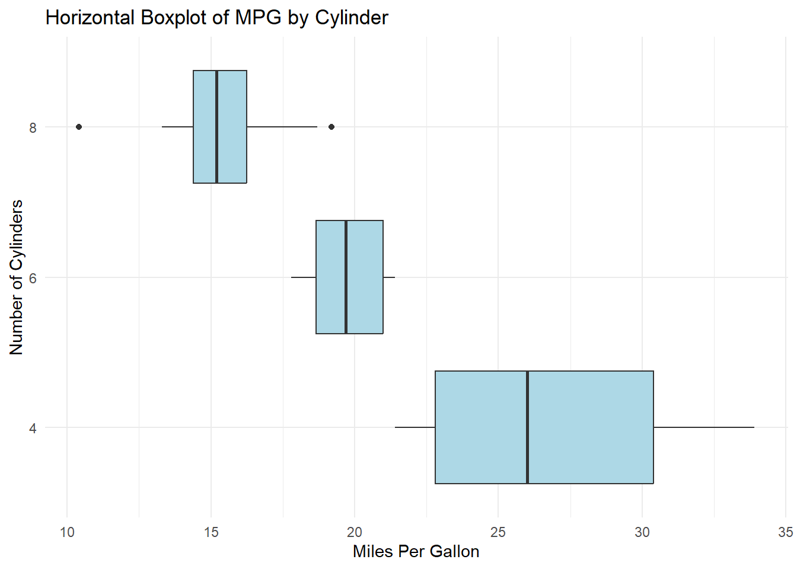

boxplot(
mpg ~ cyl,
data = mtcars,
horizontal = TRUE,
main = "Horizontal Boxplot of MPG by Cylinder",
col = "lightblue"
)Introduction
Data visualization is a crucial aspect of data analysis, allowing us to understand and communicate complex data insights effectively. Among various visualization techniques, boxplots stand out for their ability to summarize data distributions. This guide will walk you through creating horizontal boxplots using base R and ggplot2, tailored for beginner R programmers.
Understanding Boxplots
Components of a Boxplot
A boxplot, also known as a whisker plot, displays the distribution of data based on a five-number summary: minimum, first quartile, median, third quartile, and maximum. It highlights the data’s central tendency and variability, making it easier to identify outliers.
When to Use Boxplots
Boxplots are particularly useful for comparing distributions across different groups. They are ideal when you want to visualize the spread and skewness of your data.
Horizontal Boxplots: An Overview
Advantages of Horizontal Boxplots
Horizontal boxplots enhance readability, especially when dealing with categorical data labels that are lengthy. They also provide a clear visualization of distribution patterns across groups.
Use Cases
Horizontal boxplots are commonly used in scenarios such as comparing test scores across different classes, analyzing sales data across regions, or visualizing the distribution of survey responses.
Setting Up R Environment
Installing R and RStudio
Before creating boxplots, ensure that you have R and RStudio installed on your computer. You can download R from CRAN and RStudio from RStudio’s website.
Required Packages
To create boxplots, you need to install the ggplot2 package for enhanced visualization capabilities. You can install it using:
install.packages("ggplot2")Creating Horizontal Boxplots in Base R
Basic Syntax
In base R, you can create a boxplot using the boxplot() function. To make it horizontal, set the horizontal parameter to TRUE.
Customizing Boxplots
Base R allows customization of boxplots through various parameters, such as col for color and main for the title.
Step-by-Step Guide: Base R
Loading Data
For this example, we’ll use the built-in mtcars dataset. Load it using:
data(mtcars)Plotting Horizontal Boxplots
Customizing Appearance
You can further customize your plot by adjusting axis labels, adding a grid, or changing colors:
boxplot(
mpg ~ cyl,
data = mtcars,
horizontal = TRUE,
main = "Horizontal Boxplot of MPG by Cylinder",
col = "lightblue",
xlab = "Miles Per Gallon",
ylab = "Number of Cylinders"
)Introduction to ggplot2
Why Use ggplot2?
ggplot2 offers a high-level approach to creating complex and aesthetically pleasing visualizations. It is part of the tidyverse, making it compatible with other data manipulation tools.
Basic Concepts
ggplot2 uses a layered approach to build plots, where you start with a base layer and add elements like geoms, scales, and themes.
Creating Horizontal Boxplots with ggplot2
Basic Syntax
To create a boxplot in ggplot2, use geom_boxplot() and flip it horizontally using coord_flip().
Using coord_flip()
coord_flip() swaps the x and y axes, creating a horizontal boxplot.
Step-by-Step Guide: ggplot2
Loading Data
We continue with the mtcars dataset.
Plotting Horizontal Boxplots
library(ggplot2)
ggplot(mtcars, aes(x = factor(cyl), y = mpg)) +
geom_boxplot(fill = "lightblue") +
coord_flip() +
theme_minimal() +
labs(
title = "Horizontal Boxplot of MPG by Cylinder",
x = "Number of Cylinders",
y = "Miles Per Gallon"
)
Customizing Appearance
You can enhance your plot by adding themes, colors, and labels:
ggplot(mtcars, aes(x = factor(cyl), y = mpg, fill = factor(cyl))) +
geom_boxplot() +
coord_flip() +
theme_minimal() +
labs(
title = "Horizontal Boxplot of MPG by Cylinder",
x = "Number of Cylinders",
y = "Miles Per Gallon",
fill = "Cylinder") +
theme_minimal()Advanced Customizations in ggplot2
Adding Colors and Themes
Use scale_fill_manual() for custom colors and explore theme() options for layout adjustments.
Faceting and Grouping
Faceting allows you to create multiple plots based on a factor, using facet_wrap() or facet_grid().
ggplot(mtcars, aes(x = factor(cyl), y = mpg, fill = factor(gear))) +
geom_boxplot() +
coord_flip() +
facet_wrap(~ gear, scales = "free") +
theme_minimal()Comparing Base R and ggplot2
Pros and Cons
- Base R: Simpler and requires fewer dependencies, but less flexible for complex plots.
- ggplot2: More powerful for complex visualizations, but has a steeper learning curve.
Performance Considerations
For larger datasets, ggplot2 may be slower due to its complexity, but it provides more options for customization and aesthetics.
Common Errors and Troubleshooting
Debugging Tips
- Ensure all required packages are installed and loaded.
- Check for typos in function names and parameters.
- Verify data types and structures are compatible with plotting functions.
FAQs
- What is the purpose of a horizontal boxplot?
- Horizontal boxplots improve readability and are useful when dealing with long category labels.
- How do I flip a boxplot in ggplot2?
- Use
coord_flip()to switch the axes and create a horizontal boxplot.
- Use
- Can I customize the colors of my boxplot in R?
- Yes, both base R and ggplot2 allow color customization using parameters like
colandfill.
- Yes, both base R and ggplot2 allow color customization using parameters like
- What are common errors when creating boxplots in R?
- Common errors include mismatched data types and missing package installations.
- How do I compare multiple groups using boxplots?
- Use the
fillaesthetic in ggplot2 or multipleboxplot()calls in base R to compare groups.
- Use the
Practical Examples
Example 1: Analyzing a Simple Dataset
Create a horizontal boxplot to compare student test scores across different classes.
Example 2: Complex Data Visualization
Use ggplot2 to visualize sales data distributions across regions, incorporating facets and themes for clarity.
Visual Enhancements
Adding Annotations
Enhance your plots by adding text annotations with annotate() in ggplot2.
Using Custom Themes
Experiment with ggplot2’s built-in themes or create your own using theme().
Conclusion
Creating horizontal boxplots in R is a valuable skill for visualizing data distributions. Whether you choose base R for simplicity or ggplot2 for its advanced capabilities, mastering these techniques will enhance your data analysis toolkit. Experiment with different datasets and customization options to discover the full potential of boxplots.
Encourage Engagement
We’d love to hear your feedback! Share your experiences with horizontal boxplots in R on social media and tag us. If you have questions or tips, leave a comment below.
References
- Wickham, H. (2016). ggplot2: Elegant Graphics for Data Analysis. Springer-Verlag New York.
- R Documentation. (n.d.). Boxplot. Retrieved from R Documentation.
- ggplot2 Documentation. (n.d.). Retrieved from ggplot2.
Some Extra Readings
Here are some other great resources:
- “R for Data Science” by Hadley Wickham & Garrett Grolemund
- This book is a great resource for beginners and provides an introduction to data science using R, including data visualization with ggplot2.
- “ggplot2: Elegant Graphics for Data Analysis” by Hadley Wickham
- A comprehensive guide focused specifically on ggplot2, teaching you how to create a wide range of visualizations, including boxplots.
- “The R Graphics Cookbook” by Winston Chang
- This cookbook offers practical recipes for visualizing data in R, covering both base R graphics and ggplot2.
- R Documentation and Cheat Sheets
- The official R documentation and ggplot2 cheat sheets are invaluable for quick reference and deeper exploration of functions and customization options. Some Tutorials
- “Visualize This: The FlowingData Guide to Design, Visualization, and Statistics” by Nathan Yau
- While not R-specific, this book provides insights into the principles of data visualization, which can enhance your overall understanding of creating effective visualizations.
- R-bloggers
- A community blog site that aggregates content related to R programming, including tutorials and examples on creating boxplots and other visualizations.
These resources offer a mix of theoretical knowledge and practical application, helping you build a solid foundation in R programming and data visualization.
Happy Coding! üöÄ